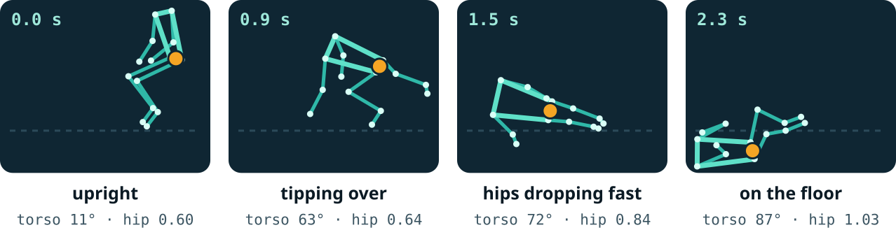
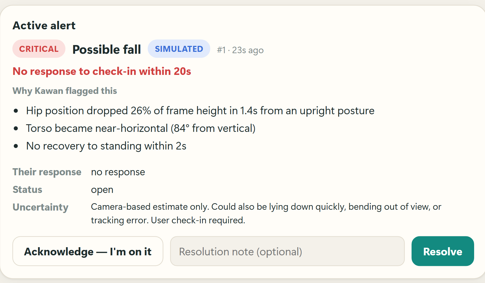
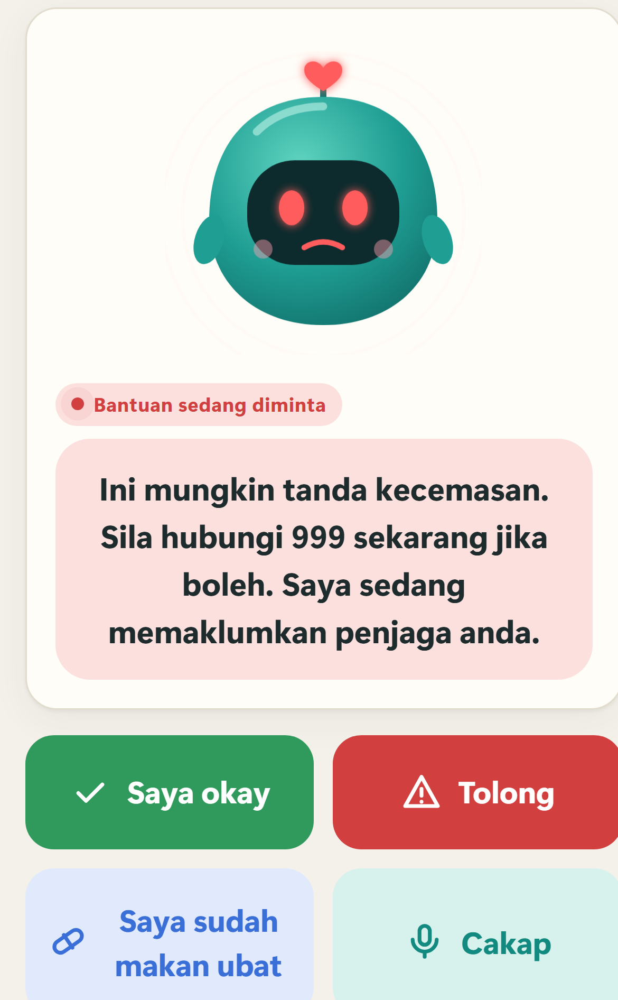
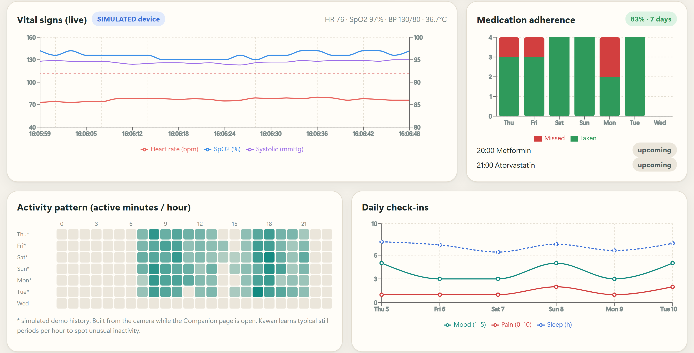

The problem
Impactof Malaysian adults have diabetes, 29.2% hypertension; ~4 in 10 don't know it.1
people die from falls each year; most fatal falls are in over-60s.2
of fallers over 90 couldn't get up alone; 30% lay on the floor ≥ 1 hour.3
of long-term patients don't take medicine as prescribed.4
Our solution
Impact · UsabilityNotice
Camera spots falls and unusual stillness; tracks medicines and readings.
Check in
"Are you okay?" by voice, button or chat, in English or Malay.
Escalate only if needed
"Help", a red-flag symptom or no reply in 20 s alerts caregivers.
Explain why
Caregivers see why, and what else it could be.
How it works
Technical execution
Hip dropped 14% of frame (0.6× torso) in 1.3 s · torso 90° · no recovery within 2 s
Skeleton extracted from UR Fall clip fall-04.5
The app
Usability · real screens, demo data
Fall alert, with reasons
Why it fired, what else it could be.

On a phone
Bahasa Melayu

Caregiver dashboard
Vitals, adherence, activity, check-ins.
- Spoken reminders, missed-dose notice
- Vitals with sustained-reading alerts
- Daily check-in triage, up to "call 999"
- 104 cited health topics, EN & BM
- Doctor report, one click
Safe & private by design
- Rules decide, AI only explains. Check-in replies never go to the AI.
- Fails safe. "Okay, but my leg hurts" counts as help; unclear replies keep the timer running.
- Explains itself: every alert lists why it fired and what else it could be.
stays in the browser→33 landmarks
x, y, visibility · 15/s→Kawan hub
same PC by default
No video or images are sent or stored; the hub keeps only events and summaries. One opt-in exception: "Check my medicine" sends a single photo to Claude when tapped (needs an AI key).
Offline & online
Works without internet
- Pose detection, fall & inactivity rules
- Check-ins by button and chat
- Spoken prompts (device voices)
- Reminders, vitals, daily check-in
- 104-topic health library
- Dashboard & report (on the hub PC)
Needs internet
- Voice input (browser speech service)
- Telegram alerts to phones
- Claude AI answers & pill check (optional, API key)
- Phones & remote caregivers (secure link)
Results
Technical execution · Usabilityfall clips detected (90%). The earlier frame-size rule: 17/30.
everyday clips triggered a check-in; 10 of them show people lying down on purpose.
Test conditions: UR Fall dataset, 70 lab clips of actors, one room, side-view camera; same pose model and settings as the app; each clip's last frame held 10 s (person stays down).
Not real-world accuracy. Preliminary lab testing; not clinically validated.
automated tests: 117 backend · 19 frontend · 12 browser end-to-end, run by GitHub Actions on every push.
| What we heard | What we did / will do |
|---|---|
| Alerts on 2–3 caregivers' phones | ✓ Done: Telegram to every caregiver |
| Voice sometimes misses words | Tap buttons as backup; better speech next |
| Knows less than chatbots | Deliberate: cited sources only |
Feasibility & next steps
FeasibilityReady to run today
- Hardware: a laptop or tablet with a webcam + Chrome/Edge.
- Cost: free open-source stack; AI and Telegram optional.
- Setup: one command; a secure link for phones.
Roadmap
Working prototype; tried by 4 early users.
Caregiver login · hosted multi-household version · push alerts · device integration.
Clinical validation with healthcare partners · more emergency types.